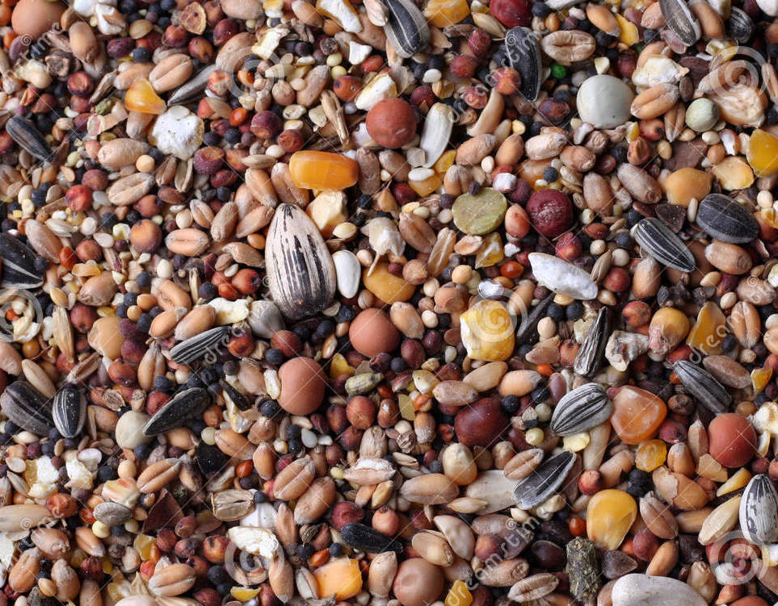

Leonardo M. Bastos
Assistant Professor
Integrative Precision Agriculture

Principles of project management
From this: 
To this:

Welcome in, version control
Think of “track changes”, but on any file type
Especially useful for script files (.Rmd, .qmd)
As your code grows and develops, snapshots are saved allowing you to retrieve different versions
This connects your current-self with your past-self (what were I thinking when I decided on doing this step?)
Locally (in your own machine), use


Containerizing projects
- To avoid discrepancies of software versions, we can use containers
- Containers keep track of all software versions in a project, and ship that project with those default versions
- This ensures the project is reproducible not only for collaborators, but also your future self
- One example of container software is


Personal marketing
This entire presentation was made with quarto, and its source code is available on my GitHub
You can find more info on my lab’s website (also made with quarto): Bastos Lab

You can find my data science teaching material on my blog: agRonomy
Wish to learn and apply these concepts to your own research?
Applications of data science in ag research, Spring 2024
Thanks! üôè üíª